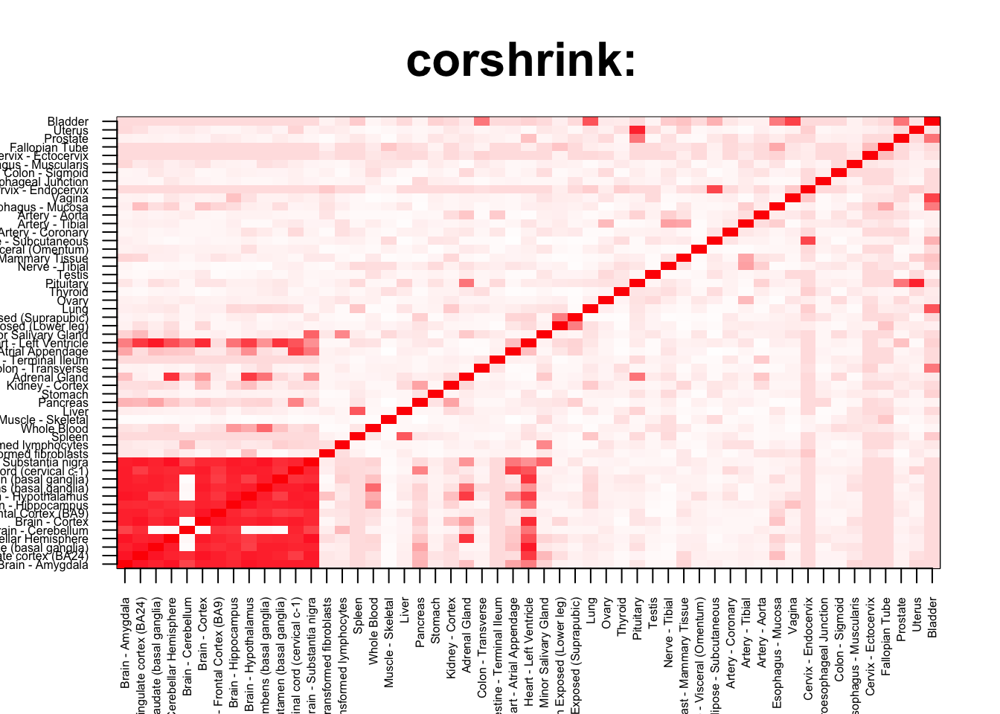
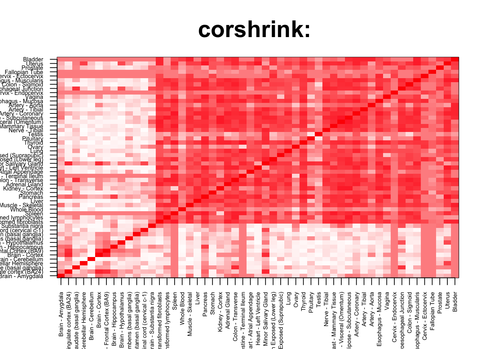
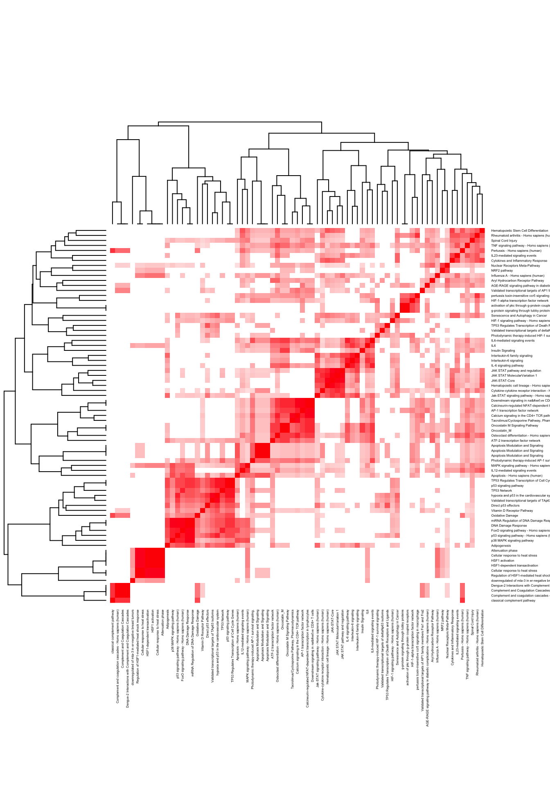
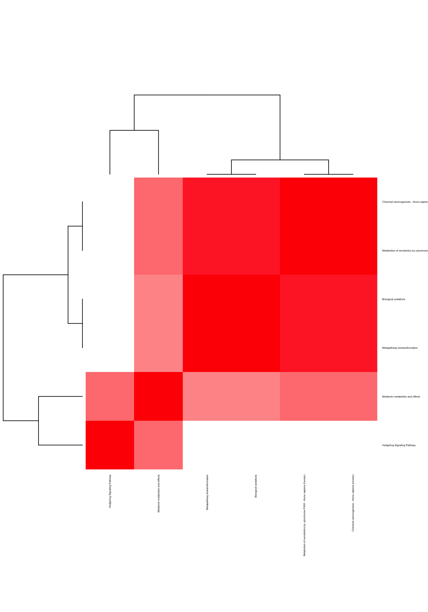

corshrink_data <- get(load("../output/ash_cor_only_voom_pearson_halfuniform_gtex_tissues.rda"))
cor_data <- get(load("../output/cor_tissues_non_ash_voom_pearson.rda"))common_samples <- get(load("../output/common_samples.rda"))
tissue_labels <- read.table(file = "../data/GTEX_V6/samples_id.txt")[,3]
#library(data.table)
#data <- data.frame(fread("../data/GTEX_V6/cis_gene_expression.txt"))
#matdata <- t(data[,-c(1,2)])
gene_names <- as.character(read.table(file = "../data/GTEX_V6/gene_names_GTEX_V6.txt")[,1])
gene_names_1 <- as.character(sapply(gene_names, function(x) return(strsplit(x, "[.]")[[1]][1])))
U <- unique(tissue_labels)tab <- array(0, dim(corshrink_data)[3])
for(m in 1:dim(corshrink_data)[3]){
temp <- corshrink_data[order_index[1:13], order_index[(1:13)],m]
temp1 <- corshrink_data[order_index[-(1:13)], order_index[-(1:13)],m]
tab[m] <- median(temp[row(temp) > col(temp)]) - median(temp1[row(temp1) > col(temp1)])
}
ordering_high <- order(tab, decreasing = TRUE)[1:100]
ordering_low <- order(tab, decreasing = FALSE)[1:100]top_gene <- gene_names_1[ordering_high[1]]
col=c(rev(rgb(seq(1,0,length=1000),1,seq(1,0,length=1000))),
rgb(1,seq(1,0,length=1000),seq(1,0,length=1000)))
image(as.matrix(corshrink_data[order_index,order_index, ordering_high[1]]),
col=col, main=paste0("corshrink: "), cex.main=2,
xaxt = "n", yaxt = "n", zlim=c(-1,1))
axis(1, at = seq(0, 1, length.out = 53), labels = U[order_index], las=2, cex.axis = 0.5)
axis(2, at = seq(0, 1, length.out = 53), labels = U[order_index], las=2, cex.axis = 0.5)
bottom_gene <- gene_names_1[ordering_low[1]]
col=c(rev(rgb(seq(1,0,length=1000),1,seq(1,0,length=1000))),
rgb(1,seq(1,0,length=1000),seq(1,0,length=1000)))
image(as.matrix(corshrink_data[order_index,order_index, ordering_low[1]]),
col=col, main=paste0("corshrink: "), cex.main=2,
xaxt = "n", yaxt = "n", zlim=c(-1,1))
axis(1, at = seq(0, 1, length.out = 53), labels = U[order_index], las=2, cex.axis = 0.5)
axis(2, at = seq(0, 1, length.out = 53), labels = U[order_index], las=2, cex.axis = 0.5)
high_brain_nonbrain_genes <- gene_names_1[ordering_high]
low_brain_nonbrain_genes <- gene_names_1[ordering_low]
write.table(cbind.data.frame(high_brain_nonbrain_genes), quote = FALSE, file = "../utilities/brain_nonbrain/high_brain_nonbrain.txt", row.names = FALSE, col.names = FALSE)
write.table(cbind.data.frame(low_brain_nonbrain_genes), quote = FALSE, file = "../utilities/brain_nonbrain/low_brain_nonbrain.txt", row.names = FALSE, col.names = FALSE)tab <- read.delim("../utilities/brain_nonbrain/pathway_high.tab")
head(cbind.data.frame(tab$pathway, tab$q.value), 10)## tab$pathway
## 1 TNF signaling pathway - Homo sapiens (human)
## 2 Validated transcriptional targets of AP1 family members Fra1 and Fra2
## 3 Cytokine-cytokine receptor interaction - Homo sapiens (human)
## 4 Vitamin D Receptor Pathway
## 5 Apoptosis - Homo sapiens (human)
## 6 Nuclear Receptors Meta-Pathway
## 7 Oxidative Damage
## 8 IL6-mediated signaling events
## 9 Photodynamic therapy-induced AP-1 survival signaling.
## 10 Apoptosis Modulation and Signaling
## tab$q.value
## 1 6.037289e-06
## 2 1.497919e-05
## 3 5.218447e-05
## 4 1.185548e-04
## 5 1.228863e-04
## 6 1.474055e-04
## 7 1.777445e-04
## 8 3.507673e-04
## 9 4.246073e-04
## 10 4.977479e-04pathway2 <- read.delim("../utilities/brain_nonbrain/pathway_high.tab")
if(length(which(pathway2$q.value < 0.05)) > 2){
pathway2 <- pathway2[which(pathway2$q.value < 0.05),]
}
maxpath = 75
pathway <- pathway2[1:min(maxpath, dim(pathway2)[1]), ]
ensembl_genes <- pathway$members_input_overlap
pathway_list_genes <- sapply(ensembl_genes, function(x) return(strsplit(as.character(x), "; ")))
all_genes <- Reduce(union, pathway_list_genes)
pathway_mat <- matrix(0, length(pathway_list_genes), length(all_genes))
for(l in 1:dim(pathway_mat)[1]){
pathway_mat[l, match(pathway_list_genes[[l]], all_genes)] <- 1
}
pathway_bimat <- (pathway_mat)%*%t(pathway_mat)
pathway_bimat_prop <- diag(1/sqrt(diag(pathway_bimat)), dim(pathway_bimat)[1]) %*% pathway_bimat %*% diag(1/sqrt(diag(pathway_bimat)), dim(pathway_bimat)[1])
col=c(rev(rgb(seq(1,0,length=1000),1,seq(1,0,length=1000))),
rgb(1,seq(1,0,length=1000),seq(1,0,length=1000)))
heatmap(pathway_bimat_prop, labRow = pathway$pathway, labCol = pathway$pathway, cexRow = 0.3, cexCol = 0.3, col = col, zlim = c(-1,1),
scale = "none", margins = c(5, 5))
tab <- read.delim("../utilities/brain_nonbrain/GO_high.tab")
head(cbind.data.frame(tab$term_name, tab$q.value), 10)## tab$term_name tab$q.value
## 1 cell death 2.899646e-11
## 2 apoptotic signaling pathway 8.036141e-11
## 3 regulation of cell death 7.961747e-10
## 4 programmed cell death 7.961747e-10
## 5 regulation of programmed cell death 7.120519e-09
## 6 apoptotic process 1.211702e-08
## 7 positive regulation of response to stimulus 2.670793e-08
## 8 positive regulation of cell death 1.280554e-07
## 9 extrinsic apoptotic signaling pathway 1.434293e-07
## 10 regulation of apoptotic signaling pathway 3.441032e-07tab <- read.delim("../utilities/brain_nonbrain/pathway_low.tab")
head(cbind.data.frame(tab$pathway, tab$q.value), 10)## tab$pathway
## 1 Hedgehog Signaling Pathway
## 2 Melatonin metabolism and effects
## 3 Metapathway biotransformation
## 4 Biological oxidations
## 5 Metabolism of xenobiotics by cytochrome P450 - Homo sapiens (human)
## 6 Chemical carcinogenesis - Homo sapiens (human)
## tab$q.value
## 1 0.006097243
## 2 0.010165839
## 3 0.021285320
## 4 0.025061818
## 5 0.025061818
## 6 0.026129420pathway2 <- read.delim("../utilities/brain_nonbrain/pathway_low.tab")
if(length(which(pathway2$q.value < 0.05)) > 2){
pathway2 <- pathway2[which(pathway2$q.value < 0.05),]
}
maxpath = 75
pathway <- pathway2[1:min(maxpath, dim(pathway2)[1]), ]
ensembl_genes <- pathway$members_input_overlap
pathway_list_genes <- sapply(ensembl_genes, function(x) return(strsplit(as.character(x), "; ")))
all_genes <- Reduce(union, pathway_list_genes)
pathway_mat <- matrix(0, length(pathway_list_genes), length(all_genes))
for(l in 1:dim(pathway_mat)[1]){
pathway_mat[l, match(pathway_list_genes[[l]], all_genes)] <- 1
}
pathway_bimat <- (pathway_mat)%*%t(pathway_mat)
pathway_bimat_prop <- diag(1/sqrt(diag(pathway_bimat)), dim(pathway_bimat)[1]) %*% pathway_bimat %*% diag(1/sqrt(diag(pathway_bimat)), dim(pathway_bimat)[1])
col=c(rev(rgb(seq(1,0,length=1000),1,seq(1,0,length=1000))),
rgb(1,seq(1,0,length=1000),seq(1,0,length=1000)))
heatmap(pathway_bimat_prop, labRow = pathway$pathway, labCol = pathway$pathway, cexRow = 0.3, cexCol = 0.3, col = col, zlim = c(-1,1),
scale = "none", margins = c(5, 5))
tab <- read.delim("../utilities/brain_nonbrain/GO_low.tab")
head(cbind.data.frame(tab$term_name, tab$q.value), 10)## tab$term_name tab$q.value
## 1 xenobiotic catabolic process 0.02096971
## 2 maternal process involved in parturition 0.02212614
## 3 organic cation transport 0.06444999
## 4 parturition 0.05011614
## 5 regulation of epithelial cell differentiation 0.07752083
## 6 nucleobase-containing compound kinase activity 0.04137380
## 7 microtubule bundle formation 0.24922369
## 8 response to toxic substance 0.29356402This R Markdown site was created with workflowr